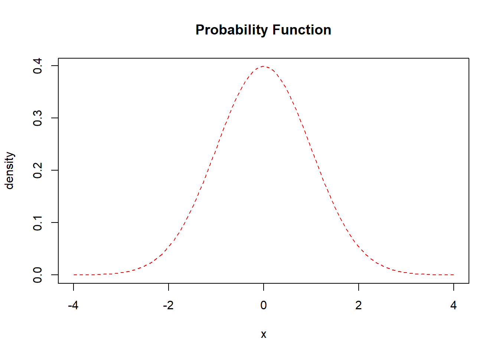

Chapter 7 Bayesian Interpretation
7.1 Bayesian Interpretation of Lasso
We can show that \(\hat{\boldsymbol\beta}_{LASSO}\) has a Bayesian interpretation. In particular, we can show that is a Bayes estimator for \(\boldsymbol\beta\) assuming a multivariate Normal likelihood for \(\mathbf{y}\): \[f(y\mid \boldsymbol\beta, \sigma^2)\sim N(\mathbf{X}\boldsymbol\beta, \sigma^2\mathbf{I}),\] and an independent double exponential (aka Laplace) prior for \(\boldsymbol\beta\): \[f(\beta_j) = \left(\frac{\lambda}{2} \right)\exp(-\lambda |\beta_j|)\]
The above is an example of what the distribution of the double exponential (aka Laplace) prior looks like. From the grapg, we can see that as it goes towards the two sides, the density gradually goes to exactly 0. This explains why it is possible for Lasso coefficients to shrink towards 0 and ultimately be exactly 0.
7.2 Posterior
The posterior distribution for \(\boldsymbol\beta\) (assuming \(\sigma^2 = 1\) for simplicity):
\[\begin{aligned} g(\boldsymbol\beta \mid y)&\propto f(y \mid \boldsymbol\beta, \sigma^2) f(\boldsymbol\beta)\\ &= f(y \mid \boldsymbol\beta) \prod_{i=1}^p f(\beta_j)\text{, by independence assumption}\\ &=(2\pi)^{-n/2}\exp\left(-\frac{1}{2}(\mathbf{y} - \mathbf{X}\boldsymbol\beta)^\top (\mathbf{y} - \mathbf{X}\boldsymbol\beta) \right) \left(\frac{\lambda}{2}\right)^p \exp\left(-\lambda\sum_{j=1}^p |\beta_j|)\right)\\ &\propto\exp\left(-\frac{1}{2}(\mathbf{y} - \mathbf{X}\boldsymbol\beta)^\top (\mathbf{y} - \mathbf{X}\boldsymbol\beta) \right) \exp\left(-\lambda\sum_{j=1}^p |\beta_j|)\right)\\ &=\exp\left(-\frac{1}{2}(\mathbf{y} - \mathbf{X}\boldsymbol\beta)^\top (\mathbf{y} - \mathbf{X}\boldsymbol\beta)-\lambda\sum_{j=1}^p |\beta_j|)\right) \end{aligned}\]
7.3 Posterior Mode
Maximizing the posterior distribution, or minimizing the \(-\log\) posterior, leads to \(\hat\beta_{LASSO}\).
\[\begin{aligned}\\ &\arg\max\text{ }\exp\left(-\frac{1}{2}(\mathbf{y} - \mathbf{X}\boldsymbol\beta)^\top (\mathbf{y} - \mathbf{X}\boldsymbol\beta)-\lambda\sum_{j=1}^p |\beta_j|)\right)\\ =\text{ }&\arg\max\text{ }-\frac{1}{2}(\mathbf{y} - \mathbf{X}\boldsymbol\beta)^\top (\mathbf{y} - \mathbf{X}\boldsymbol\beta)-\lambda\sum_{j=1}^p |\beta_j|\\ =\text{ }&\arg\min\text{ }\frac{1}{2}(\mathbf{y} - \mathbf{X}\boldsymbol\beta)^\top (\mathbf{y} - \mathbf{X}\boldsymbol\beta)+\lambda\sum_{j=1}^p |\beta_j|\\ =\text{ }&\arg\min\text{ -log posterior}\\ \end{aligned}\]
\[\begin{aligned} \arg\min\text{ -log posterior} &=\arg\min-\log(\exp\left(-\frac{1}{2}(\mathbf{y} - \mathbf{X}\boldsymbol\beta)^\top (\mathbf{y} - \mathbf{X}\boldsymbol\beta)-\lambda\sum_{j=1}^p |\beta_j|)\right))\\ &=\arg\min-\left(-\frac{1}{2}(\mathbf{y} - \mathbf{X}\boldsymbol\beta)^\top (\mathbf{y} - \mathbf{X}\boldsymbol\beta)-\lambda\sum_{j=1}^p |\beta_j|)\right)\\ &=\arg\min\frac{1}{2}(\mathbf{y} - \mathbf{X}\boldsymbol\beta)^\top (\mathbf{y} - \mathbf{X}\boldsymbol\beta)+\lambda\sum_{j=1}^p |\beta_j|\\ &=\hat\beta_{LASSO}\text{, by definition} \end{aligned}\]
7.4 Bayesian Interpretation of Ridge
In a similar way, we can show that \(\hat{\boldsymbol\beta}_{RIDGE}\) has a Bayesian interpretation by using a different prior. In particular, we can show that is a Bayes estimator for \(\boldsymbol\beta\) assuming a multivariate Normal likelihood for \(\mathbf{y}\): \[f(y\mid \boldsymbol\beta, \sigma^2)\sim N(\mathbf{X}\boldsymbol\beta, \sigma^2\mathbf{I}),\] and an independent normal prior for \(\boldsymbol\beta\): \[f(\beta_j) = \left(\frac{\lambda}{\sigma^2\sqrt{2\pi}} \right)\exp(-\frac{1}{2}(\frac{\lambda\beta_j}{\sigma^2})^2)\]

The above is an example of what the distribution of the normal prior looks like. From the grapg, we can see that as it goes towards the two sides, the density gradually shrinks towards 0. This explains why it is possible for Ridge coefficients to shrink towards 0 and cannot goes to exactly 0.
7.5 Posterior
The posterior distribution for \(\boldsymbol\beta\) (assuming \(\sigma^2 = 1\) for simplicity):
\[\begin{aligned} g(\boldsymbol\beta \mid y)&\propto f(y \mid \boldsymbol\beta, \sigma^2) f(\boldsymbol\beta)\\ &= f(y \mid \boldsymbol\beta) \prod_{i=1}^p f(\beta_j)\text{, by independence assumption}\\ &=(2\pi)^{-n/2}\exp\left(-\frac{1}{2}(\mathbf{y} - \mathbf{X}\boldsymbol\beta)^\top (\mathbf{y} - \mathbf{X}\boldsymbol\beta) \right) \left(\frac{\lambda}{\sqrt{2\pi}} \right)^p\exp(-\frac{\lambda^2}{2}\sum_{j=1}^p\beta_j^2)\\ &\propto\exp\left(-\frac{1}{2}(\mathbf{y} - \mathbf{X}\boldsymbol\beta)^\top (\mathbf{y} - \mathbf{X}\boldsymbol\beta) \right) \exp\left(-\lambda^*\sum_{j=1}^p\beta_j^2\right)\\ &=\exp\left(-\frac{1}{2}(\mathbf{y} - \mathbf{X}\boldsymbol\beta)^\top (\mathbf{y} - \mathbf{X}\boldsymbol\beta)-\lambda^*\sum_{j=1}^p\beta_j^2\right) \end{aligned}\]
7.6 Posterior Mode
Maximizing the posterior distribution, or minimizing the \(-\log\) posterior, leads to \(\hat\beta_{RIDGE}\).
\[\begin{aligned}\\ &\arg\max\text{ }\exp\left(-\frac{1}{2}(\mathbf{y} - \mathbf{X}\boldsymbol\beta)^\top (\mathbf{y} - \mathbf{X}\boldsymbol\beta)-\lambda^*\sum_{j=1}^p\beta_j^2\right)\\ =\text{ }&\arg\max\text{ }-\frac{1}{2}(\mathbf{y} - \mathbf{X}\boldsymbol\beta)^\top (\mathbf{y} - \mathbf{X}\boldsymbol\beta)-\lambda^*\sum_{j=1}^p\beta_j^2\\ =\text{ }&\arg\min\text{ }\frac{1}{2}(\mathbf{y} - \mathbf{X}\boldsymbol\beta)^\top (\mathbf{y} - \mathbf{X}\boldsymbol\beta)+\lambda^*\sum_{j=1}^p\beta_j^2\\ =\text{ }&\arg\min\text{ -log posterior}\\ \end{aligned}\]
\[\begin{aligned} \arg\min\text{ -log posterior} &=\arg\min-\log(\exp\left(-\frac{1}{2}(\mathbf{y} - \mathbf{X}\boldsymbol\beta)^\top (\mathbf{y} - \mathbf{X}\boldsymbol\beta)-\lambda^*\sum_{j=1}^p\beta_j^2\right))\\ &=\arg\min-\left(-\frac{1}{2}(\mathbf{y} - \mathbf{X}\boldsymbol\beta)^\top (\mathbf{y} - \mathbf{X}\boldsymbol\beta)-\lambda^*\sum_{j=1}^p\beta_j^2\right)\\ &=\arg\min\frac{1}{2}(\mathbf{y} - \mathbf{X}\boldsymbol\beta)^\top (\mathbf{y} - \mathbf{X}\boldsymbol\beta)+\lambda^*\sum_{j=1}^p\beta_j^2\\ &=\hat\beta_{RIDGE}\text{, by definition} \end{aligned}\]
7.7 Limitations of Ridge and Lasso
According to our empirical results, we find that both ridge and lasso are better at making predictions than the OLS model.
The coefficients in Lasso can reach zero while those in ridge can never be zero. If we want to perform variable selection, lasso might be a better choice.
One important drawback of Lasso and ridge is that it’s very hard/impossible to do proper inference (i.e., get confidence intervals and p-values)—you really just get estimates and that’s it.
The other thing is that we usually cannot give a good explanation for the coefficients and the entire model, because the coefficients are shrunk. Some might say we could use Lasso simply as a variable selection tool and we can use the Lasso result to generate an OLS which is easier to explain. But note that there is possibility that Lasso would give us wrong information, based on assumptions we have made about the data.
In real examples, when dealing with categorical variables(those with more than 10 sub-categories), Lasso often does weird thing as it treats each of the sub-category as an individual variable, that is, it selects some of the sub-categories while think others to be irrelevant. This also makes it hard to interpret.
7.8 Reference
Hastie, T., Friedman, J., & Tisbshirani, R. (2017). The Elements of statistical learning: data mining, inference, and prediction. New York: Springer.
James, G., Witten, D., Hastie, T., & Tibshirani, R. (2017). An introduction to statistical learning: with applications in R. New York: Springer.
Tibshirani, R. (1996). Regression Shrinkage and Selection Via the Lasso. Journal of the Royal Statistical Society: Series B (Methodological), 58(1), 267–288. doi: 10.1111/j.2517-6161.1996.tb02080.x
Wieringen, W. N. van. (2020, January 18). Lecture Notes on Ridge Regression. PDF.